Deep Qt Learn-1
Deep Qt
写在前面
这个文档是为了正儿八经的学习Qt开开设的，本次Qt文档将会严肃的基于Qt5开发实例这本书，展开对Qt的学习。值得注意到是，当你阅读此文档时，我们将默认您有一定的Qt基础
Start all
让我们先从写一个对话框——其可以返回圆的大小开始！我们首先构建一个基于QDialog的项目，在Ui编辑窗口处拖一个LineEdit，拖一个QTextBrowser，拖一个QPushButton出来，嗯，对了，为了让他美观一些，我们整一个QGridLayout上去。以及，限制一下FixedSize，至少，我们并不需要他托的太离谱
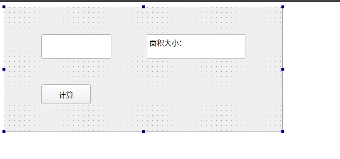
我想这不能再简单了。现在，我们的目光就聚集在这三个控件上，围绕他们完成我们的功能，在下面
计算圆的大小
我们老规矩，程序经过预处理和符号加载后，从main处开始运行代码：
// main.cpp
#include "dialog.h"
#include <QApplication>
int main(int argc, char *argv[])
{
QApplication a(argc, argv);
Dialog w;
w.show();
return a.exec();
} 我们逐行分析
#include "dialog.h"
#include <QApplication> 这个dialog.h，可能你的不是，是什么别的名字，但是你摁住Ctrl + 鼠标进去一看，果然，正是你自己的头文件。在这里，我们对我们的窗口完成的功能实现预定义
第二行的QApplication则是引入了QApllication类，我们的各式各样的GUI广泛资源，基本设置和事件处理都由他负责
int main(int argc, char *argv[])
{
QApplication a(argc, argv); 命令行程序，我们的程序接受了一个命令行，同时值得注意是，创建了一个QApplication，处理我们的命令行。
Dialog w;
w.show(); 创建了一个Dialog，并且显示它——我们的工作结束！
return a.exec();
} 程序进入消息循环，等待可能的输入响应
好了，扯完了，我们下面来写代码：
这是我们的头文件
#ifndef DIALOG_H
#define DIALOG_H
#include <QDialog>
#include <QKeyEvent>
namespace Ui {
class Dialog;
}
class Dialog : public QDialog
{
Q_OBJECT
public:
explicit Dialog(QWidget *parent = nullptr);
void caculateArea(); // 核心处理函数
~Dialog();
private slots:
void on_pushButton_clicked(); // 摁下摁扭的响应
void on_lineEdit_returnPressed(); // 摁Enter键的响应
private:
Ui::Dialog *ui;
};
#endif // DIALOG_H 按照逻辑顺序，我们先写核心代码：
void caculateArea(); 我们先拿出两个宏，第一个是衡量PI的精度
const double PI = 3.1415926; // #define PI 3.1415926 第二个是衡量面积大小
#define Area(X) ( X*X*PI ) 好，现在，我们写核心：很简单，我们触发了这个函数表示开始算，拿到LineEdit的结果，然后投射到TextBrowser上
// dialog.cpp
void Dialog::caculateArea()
{
bool isAbleTransform;
double radius = static_cast<double>(ui->lineEdit->text().toFloat(&isAbleTransform));
if(!isAbleTransform){
QMessageBox::critical(this,"错误！", "输入不是数字！");
return;
}
ui->textBrowser->setText("面积大小：" + QString::number(Area(radius)));
}
我们使用的是GUI的revelant API，啥呢，
void Dialog::on_pushButton_clicked()
{
caculateArea();
}
void Dialog::on_lineEdit_returnPressed()
{
caculateArea();
} 出乎意料的简单——这是因为本质上我们的响应的目的就只有一个——调用函数，显示在桌面上！
信号与槽
这个，可是Qt的一大特色，我们使用了这个东西，来化简了窗口的通信！在比较早期的Qt中，我们总是这样书写信号与曹的代码：
connect(Object1, SIGNAL(signal1), Object2, SLOT(slot1)); 现在，我们则是抛弃掉了SIGNAL和SLOT宏，转向了传递函数的地址（或者说函数指针），我们现在这样写代码：
connect(ui->pushbutton, &QPushButton::pressed, this, &MainWindow::doSomething); 这句话的意思是：绑定摁扭点击和主窗口某个方法。只要点击他，就会调用doSomething.
优点缺点
一、桌面程序的结构
Qt 信号和槽的机制（逻辑清晰的来说清楚信号和槽，呕心沥血之作）_qt的信号与槽机制原理_冯一川的博客-CSDN博客
Qt的使用场景，主要是应用于桌面程序来使用，不管你使用的操作系统平台是什么。对于桌面程序来说，最重要的就是交互了。既然有交互，就需要一个窗口系统了。
窗口系统实现了桌面程序的主要逻辑，并提供了一套基于事件驱动的编程框架。Qt同样也提供了这样的一套逻辑。
我们常见的桌面程序的结构，如下图所示：
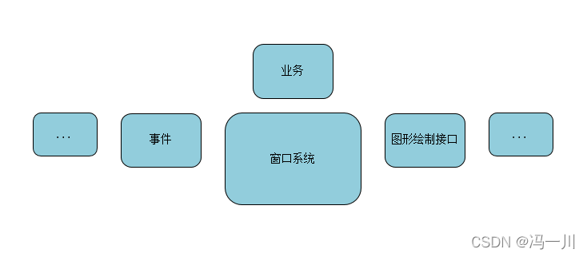
所以，我们可以看到，在桌面程序中我们需要对窗口系统的一些操作作出相应，也就是事件。
二、事件
实现事件的机制通常有两种。
一种是事件处理类，是用回调函数来实现。
另一种叫委托，就是事件的处理不是收到事件的人自己来做，而是把它委托给了别人来做。Qt就提供了这样的一种机制：信号和槽。
三、信号和槽
信号与槽是Qt特有的的消息传输机制，在Qt中信号与槽用得十分广泛。在编程的过程中，我们都会遇到消息传递的事情，本质上就是发出命令（信号、消息），执行命令（相应的执行）。
比如单击窗口上一个按钮然后弹出一个对话框，那么就可以将这个按钮的单击信号和自定义的槽关联起来，信号是按钮的单击信号，槽实现了创建一个对话框并显示的功能。
信号与槽就是实现对象之间通信的一种机制，在其他编程语言中也有通过回调机制来实现对象之间的通信。
- 信号：当对象改变其状态时，信号就由该对象发射 (emit) 出去，而且对象只负责发送信号，它不知道另一端是谁在接收这个信号。
- 槽：用于接收信号，而且槽只是普通的对象成员函数。一个槽并不知道是否有任何信号与自己相连接。
信号槽是设计模式观察者模式的一种实现：
A、一个信号就是一个能够被观察的事件，或者至少是事件已经发生的一种通知；
B、一个槽就是一个观察者，通常就是在被观察的对象发生改变的时候——也可以说是信号发出的时候——被调用的函数；
C、信号与槽的连接，形成一种观察者-被观察者的关系；
D、当事件或者状态发生改变的时候，信号就会被发出；同时，信号发出者有义务调用所有注册的对这个事件（信号）感兴趣的函数（槽）。
信号和槽是多对多的关系。一个信号可以连接多个槽，而一个槽也可以监听多个信号。
然后，实现信号和槽，就要说一下Qt的元对象系统。
四、Qt元对象系统
Qt 的元对象系统叫 Mate-Object-System，提供了对象之间通信的信号与槽机制、运行时类型信息和动态属性系统。
但是，元对象是基于三个条件的：
1、该类必须继承自Qobject类
2、必须在类的私有声明区声明Q_OBJECT宏（在类定义的时候，如果没有指定public，
则默认为private，用来启用元对象功能，比如动态属性、信号和槽）。
3、 元对象编译器Meta-Object Compiler（moc）为 QObject的子类实现元对象
特性提供必要的代码。
有了元对象系统后，我们就可以使用Qt的信号和槽了。
五、信号和槽的格式
信号与槽关联是用 QObject::connect() 函数实现的，其基本格式是：
QObject::connect(sender, SIGNAL(signal()), receiver, SLOT(slot()));在Qt 5中提供了一种新的格式：
connect(sender, &Sender::valueChanged,receiver, &Receiver::updateValue);具体的使用哪种格式，就看个人的喜好了。
注：在日常的项目编程中，如果第一种的connect方式出现报错，你可以尝试使用第二种connect方式。
六、connect的第五个参数
在connect函数中除了上面介绍的四个参数外，还有第五个参数，是缺省的参数。我们打开qobject.h文件可以看到它的定义，如下所示：
static QMetaObject::Connection connect(const QObject *sender, const char *signal,
const QObject *receiver, const char *member, Qt::ConnectionType = Qt::AutoConnection);
static QMetaObject::Connection connect(const QObject *sender, const QMetaMethod &signal,
const QObject *receiver, const QMetaMethod &method,
Qt::ConnectionType type = Qt::AutoConnection);
inline QMetaObject::Connection connect(const QObject *sender, const char *signal,
const char *member, Qt::ConnectionType type = Qt::AutoConnection) const;最后一个参数所表示的意思：
Qt::AutoConnection：信号的发送者与信号的接收者在同一线程，则默认使用Qt::DirectConnection：如果不在同一线程，则默认 使用Qt::QueuedConnection。
Qt::DirectConnection：信号的发送者与信号的接收者在同一线程中执行，当发出信号后，会马上进入槽函数，看上去就像在信号 发送位置调用了槽函数，在多线程下会比较危险，容易造成崩溃。
Qt::QueuedConnection：信号的发送者与信号的接收者不在同一线程中执行，槽函数运行于信号的接收者线程，当发送信号后， 槽函数不会马上被调用，等待信号的接收者把当前函数执行完，进入事件循环之后，槽函数才会被调用。多线程环境下一般用这个。
Qt::BlockingQueuedConnection：槽函数的调用时机与Qt::QueuedConnection一致，不过发送完信号后发送者所在线程会阻塞，直到槽函数运行完。接收者和发送者绝对不能在一个线程，否则程序会死锁。在多线程间需要同步的场合可能需要这个。
Qt::UniqueConnection：可以通过按位或（|）与以上四个结合在一起使用。当设置此参数时，当某个信号和槽已经连接时，再进行重复的连接就会失败。也就是避免了重复连接。
介绍到这里，信号和槽的基本内容就写完了。但是，还是得说下Qt事件（你可以结合着上面第2节一起看）。
七、Qt事件
无论是什么桌面操作系统，每个进程都有一个全局的事件队列（Event Queue）。当我们在键盘上按了一个键、移动或者点击鼠标、触摸屏幕等等，都会产生一个事件（Event），并由操作系统负责将它扔到进程的事件队列。
扔到事件队列后，它会等待以后的某一个时刻发送。分配器（dispatcher ）会遍历事件队列，并且将入栈的事件发送到它们的目标对象当中，因此它们被称为事件循环（Event loop）。
Qt中是通过运行QCoreApplication::exec()来进入Qt的主体事件循环的；这会引发阻塞，直至QCoreApplication::exit() 或者 QCoreApplication::quit() 被调用，进而结束循环。
Qt5模板库，工具类和基本控件
字符串类
基本操作
我们很难逃过字符串这个东西，为什么？无论是做什么，我们都要使用字符串来传递信息。无论是网络编程还是GUI显示，很多地方都需要字符串可以灵活的正确的按照我们的想法表达。
QString提供了一个非常完善的方法来供我们使用字符串。我们先来看一个简单的操作：
#include <QCoreApplication>
#include <QString>
#include <QDebug>
int main(int argc, char *argv[])
{
QCoreApplication a(argc, argv);
QString str1 = "Welcome ";
QString str2 = "Qt!";
qDebug() << str1 + str2;
return a.exec();
} 我们很自然的想到+号使得字符串自然的拼接。我们毫不意外的看到输出是：
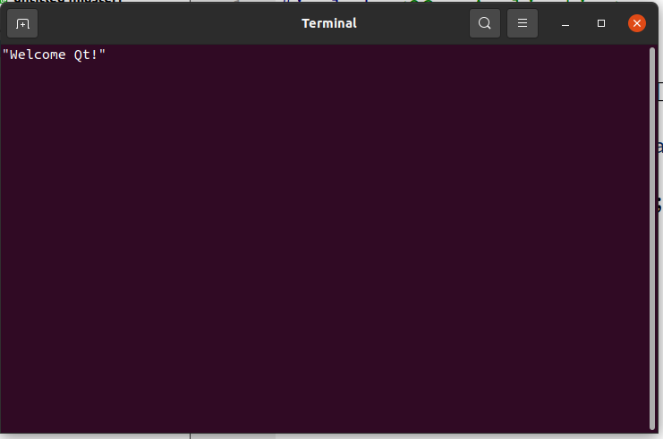
我们为什么可以直接这样写：
QString str1 = "Welcome "; 而不是
QString str1("Welcome "); 呢，答案是，我们调用了这个构造函数
inline QT_ASCII_CAST_WARN QString(const char *ch)
: d(fromAscii_helper(ch, ch ? int(strlen(ch)) : -1)) 实际上，我们还可以到—他不是QString直接跟const char*对接，而是用一个fromAscii对象处理：这是为了方便程序员更加高级的处理字符串的（翻译成Unicode字符串还是其他？）
如果不喜欢用 + （我没见过），可以使用等价的接口append，
QString str;
str.append(str1);
str.append(str2);
qDebug() << str;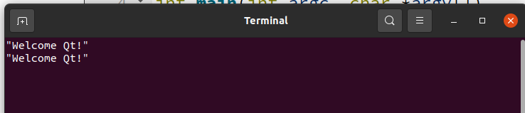
我们甚至可以使用一个sprintf来生成我们的字符串，这跟我们的C++字符串库一样
QString Str;
Str.sprintf("%s","str1");
qDebug() << Str;
Str.sprintf("%s","str2");
qDebug() << Str;
Str.sprintf("%s %s","str1", "str2");
qDebug() << Str;
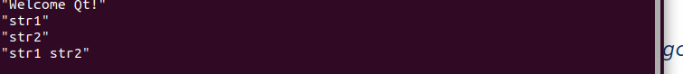
熟悉格式化输出的话，还可以使用arg函数。相较于sprintf，她更有类型安全，且支持处理的类型更多
QString argtest;
argtest = QString("%1 was in %2").arg("Charlie").arg("cc");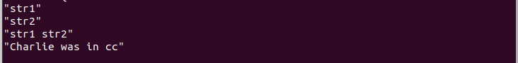
还有其他的接口，如insert等，可以看后面翻译的文档：
更加值得一提的是：QString还有一些方法如：trimmed（移除两端的空白字符）和simplified方法（用空格代表空白字符）
查询
startsWith方法判定的是某一个字符串是不是以另一个指定的字符串开头
if(argtest.startsWith("charlie",Qt::CaseInsensitive))
qDebug() << " yep ";
if(argtest.startsWith("Charlie",Qt::CaseInsensitive))
qDebug() << " yep ";
qDebug() << "We see that in Qt::CaseInsensitive mode, both judgement can be true";
if(!argtest.startsWith("charlie",Qt::CaseSensitive))
qDebug() << " nope ";
if(argtest.startsWith("Charlie",Qt::CaseSensitive))
qDebug() << " yep ";
qDebug() << "but CaseSensitive don't";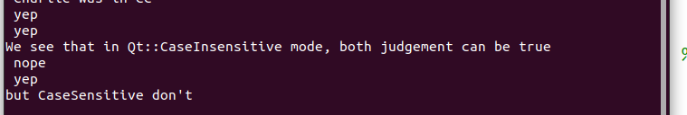
可以一瞥，对了，CaseSensitive是QT下的一个Enumeration，一个枚举值，可以看到当我们指定大小写敏感的时候，charlie就找不到了，默认的讲，我们不指定的话，自然是CaseSensitive，这一点可以在默认参数看到：
#if QT_STRINGVIEW_LEVEL < 2
bool startsWith(const QString &s, Qt::CaseSensitivity cs = Qt::CaseSensitive) const;
bool startsWith(const QStringRef &s, Qt::CaseSensitivity cs = Qt::CaseSensitive) const;
#endif
Q_REQUIRED_RESULT bool startsWith(QStringView s, Qt::CaseSensitivity cs = Qt::CaseSensitive) const Q_DECL_NOTHROW
{ return QtPrivate::startsWith(*this, s, cs); }
bool startsWith(QLatin1String s, Qt::CaseSensitivity cs = Qt::CaseSensitive) const;
bool startsWith(QChar c, Qt::CaseSensitivity cs = Qt::CaseSensitive) const; 还有个类似的是endsWith，这里不在讲述了！
contains方法则是上述两个的通用算法，查询的是子字符串在不在我们的字符串内，返回的是boolean类型
字符串比较
比较函数用于比较两个 QString，并返回整数值 0、小于 0 或大于 0，具体取决于两个 QString 分别相等、小于或大于彼此。
示例 1：比较两个 QStrings
QString str1 = “Hello”;
QString str2 = “World”;
int result = str1.compare（str2）// 结果将小于 0 在这个例子中，我们比较两个QStrings“Hello”和“World”。由于“Hello”按字母顺序排在“World”之前，因此结果将小于 0。
示例 2：使用区分大小写
QString str1 = “Hello”;
QString str2 = “HELLO”;
int result = str1.compare（str2， Qt：：CaseInsensitive ）// 结果将为 0 在这里，我们使用比较函数的可选第二个参数来指定比较应该不区分大小写。
由于“Hello”和“HELLO”仅在大小写上有所不同，因此结果将为0，表示两个QString相等。
我们最建议使用的是Compare函数，他速度很快。
字符串向其他类型转化
我们可以把字符串在可以的情况下转化为其他类型：
QString str = "125";
bool ok;
int dec = str.toInt(&ok);
if(!ok)
qDebug() << "Failed to translate";
else
qDebug() << dec;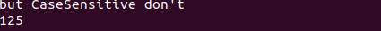
也可以转化为其他格式的字符串：
- toAscii转化为一个八位字符串
- toLatin1转化为一个Latin-1(ISO8859-1)编码的8位字符串
- toUtf8转化为utf8字符串
- toLocal8Bit字符串
Related Docs
所有类 | Qt 5.15 - 中文文档编制,帮助,手册,教程 (digitser.top)
也可以查看我的github仓库：MyTranslatedQtDocument-CN/Basic C++ Class/S at master · Charliechen114514/MyTranslatedQtDocument-CN (github.com)
容器类
我们下面要谈到的是容器类！容器！我想大伙第一反应就是STL的容器。正确的！Qt的容器类是类似的。
他可以存储我们绝大部分的容器（意味深长），基本的数据类型，Qt的简单的数据类型，都可以存放在容器里，但是，类似于QWidget和QDialog一类的玩意不可以存储，更详细的讲：一切QObject和他的派生子类都不可以存在容器里：他们甚至没法通过编译：
QList<QToolBar> list; // compiling Fails! 但是，这不是意味着存不了，而是转向存储他们的指针
QList<QToolBar*> list; // Accessible!QList, QLinkedList, QVector
QList
这是真的很常用，本人开发的一些小工具的首选容器！他们之间的对比如下：
| 容器类 | 查找 | 插入 | 头插 | 尾插 |
|---|---|---|---|---|
QList |
O(1) |
O(n) |
Amort O(1) |
Amort O(1) |
QLinkedList |
O(1) |
O(1) |
O(1) |
O(1) |
QVector |
O(1) |
O(n) |
O(n) |
Amort O(1) |
我们来看一个demo:
#include <QCoreApplication>
#include <QList>
#include <QDebug>
int main(int argc, char *argv[])
{
QCoreApplication a(argc, argv);
QList<QString> myList;
for(int i = 0; i < 10; i++)
{
QString tmp = "this is number: " + QString::number(i);
myList << tmp;
}
for (int i = 0; i < myList.size();i++) {
qDebug () << myList[i];
}
return a.exec();
} 我们使用了list 的 << 方法， 他等价于push_back方法！
QLinkedList
如名称一致——链表，正儿八经的链表！我建议——当你的元素需要频繁的插取的时候，直接使用这个容器会好得多！
QVector
STL 的vector，这里是一样的，我们还有QPolygon, QPolygonF, QStack等容器来自这个容器！
一些迭代器
这里不打算讲，但是可以注意的是，迭代器分为Java风格的和STL风格的，Java风格的迭代器可以参看Qt官网
控件
下面我们开始讲点新东西——也就是控件！
摁扭类
我们常见的基础类摁扭有：
- PushButton 普通按钮
- ToolButton 工具按钮
- RadioButton 单选按钮
- CheckBox 复选框
- Command Link Button 命令链接摁扭
- 对话框按钮盒
拖出来给大伙看一眼
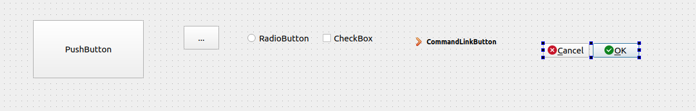
我们下面来设计一下，构建一个自定义的按钮，这一次我们构建的项目是QWidget(控件)， 我们构建一个叫做MyWidget的类，头文件记得添加这些头文件
#include<QPushButton>
#include<QFont> 头文件就可以不用动了
然后就是书写代码：
#include "myidget.h"
Myidget::Myidget(QWidget *parent)
: QWidget(parent)
{
setMinimumSize(200,120);
setMaximumSize(200,120);
QPushButton* quit = new QPushButton("Quit", this);
quit->setGeometry(60,40,75,30);
quit->setFont(QFont("Times", 18, QFont::Bold));
connect(quit, &QPushButton::clicked, this, &QWidget::close);
}
Myidget::~Myidget()
{} 以及为了显示窗口不让他失踪，我们在main.cpp中有必要指定一下：
#include "myidget.h"
#include <QApplication>
int main(int argc, char *argv[])
{
QApplication a(argc, argv);
Myidget w;
w.setGeometry(100,100,200,120); // 设置一下大小
w.show();
return a.exec();
}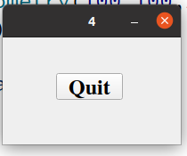
点击它，程序就结束了。
输入部件
常见的输入部件在这里：
- Combo Box 组合框
- Font Combo Box 字体编辑框 （可以获得用户选择的字体！）
- Line Edit 行编辑框
- Text Edit 文本编辑框
- Plain Text Edit 纯文本编辑框
- Spin Box 数字显示框
- Double Spin Box 双自旋盒
- Time Edit 时间编辑
- Date Edit 日期编辑
- Date/Time Edit 时间日期编辑
- Dial 拨号
- Horizontal Scroll Bar 横向滚动条
- Vertical Scroll Bar 纵向滚动条
- Horizontal Slider 横向滑块
- Vertical Slider 纵向滑块
- Key Sequence Edit 按键序编辑框
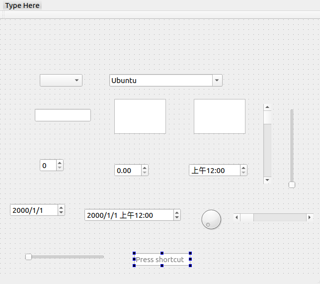
还是一样，相关的设计已经集成在我的Qt CN Document仓库了
显示控件
下面的这些控件主要是用来展示内容的（Display）
- Label: 标签
- TextBrowser 文本浏览器
- Graphic View 图形视图
- Calendar Widget 日历
- LCD Number 液晶数字
- Process Bar 进度条
- Horizontal Line水平线
- Vertical Line 铅垂线
- OpenGL Widget OpenGL控件
- QQuick Widget QML模块
容器组
- GroupBox
- Scroll Area
- Tool Box
- Tab Widget
- Stacked Widget
- Frame
- Widget
- MDI Area
- Dock Widget
- QAxWidget
Qt5 布局
我们下面来看看布局问题：
分割类QSpitter
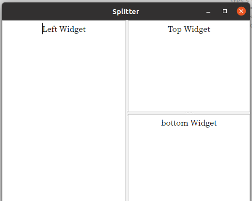
我们可以这样应用QSplitter类帮助我们做这样的事情：
#include "mainwindow.h"
#include <QApplication>
#include <QSplitter>
#include <QTextEdit>
int main(int argc, char *argv[])
{
QApplication a(argc, argv);
QFont font("ZYSong18030", 12);
a.setFont(font);
QSplitter *splitMainWindow = new QSplitter(Qt::Horizontal, 0);
// 主分割
QTextEdit* textLeft = new QTextEdit(QObject::tr("Left Widget"), splitMainWindow);
textLeft->setAlignment(Qt::AlignCenter);
// right 分割
QSplitter* rightSplit = new QSplitter(Qt::Vertical, splitMainWindow);
rightSplit->setOpaqueResize(false);
QTextEdit* textUp =new QTextEdit(QObject::tr("Top Widget"), rightSplit);
textUp->setAlignment(Qt::AlignCenter);
QTextEdit* textDown =new QTextEdit(QObject::tr("bottom Widget"), rightSplit);
textDown->setAlignment(Qt::AlignCenter);
splitMainWindow->setStretchFactor(1,1);
splitMainWindow->setWindowTitle(QObject::tr("Splitter"));
splitMainWindow->show();
// MainWindow w;
// w.show();
return a.exec();
} 现在，我们仔细瞧瞧代码：
QSplitter *splitMainWindow = new QSplitter(Qt::Horizontal, 0); 主分割窗口，我们并且还对窗口呈现主水平分割：人话如下：
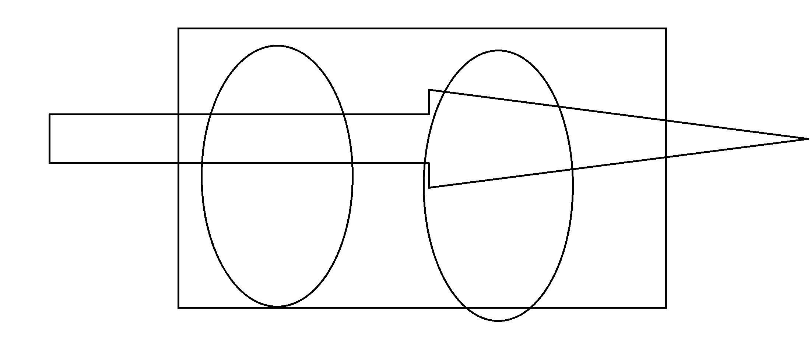
然后，在主窗口左侧插入一个TextEdit类，至于文本的对齐方式是：
| 符号 | 说明 |
|---|---|
Qt::AlignLeft |
左对齐 |
Qt::AlignRight |
右对齐 |
Qt::AlignCenter |
居中对齐 |
Qt::AlignUp |
顶对齐 |
Qt::AlignBottom |
底对齐 |
而rightSplit->setOpaqueResize(false);这句话的意思是：拖拽时不会实时更新显示，直接一条灰线。
QDockWidget类
我们下面来看一个QDockWidget类的例子：
#include "mainwindow.h"
MainWindow::MainWindow(QWidget *parent)
: QMainWindow(parent)
{
setWindowTitle(tr("DockWindows"));
QTextEdit* text = new QTextEdit(this);
text->setText(tr("Main Windows"));
text->setAlignment(Qt::AlignCenter);
setCentralWidget(text);
// Dock1
QDockWidget* dock = new QDockWidget(tr("Dock1"), this);
dock->setFeatures(QDockWidget::DockWidgetMovable);
dock->setAllowedAreas(Qt::LeftDockWidgetArea| Qt::RightDockWidgetArea);
QTextEdit* text1 = new QTextEdit();
text1->setText(tr("Window1, the dock widget can be moved between docks by the user"));
dock->setWidget(text1);
addDockWidget(Qt::RightDockWidgetArea, dock);
QDockWidget* dock1 = new QDockWidget(tr("DockWindow2"),this);\
dock1->setFeatures(QDockWidget::DockWidgetFloatable | QDockWidget::DockWidgetClosable);
QTextEdit* text2 = new QTextEdit();
text2->setText(tr("Windows2, the dock widget can be detached from the mainWindow, and floated as an independent window"));
dock1->setWidget(text2);
addDockWidget(Qt::RightDockWidgetArea, dock1);
QDockWidget* dock2 = new QDockWidget(tr("DockWindow2"),this);
dock2->setFeatures(QDockWidget::AllDockWidgetFeatures);
QTextEdit* text3 = new QTextEdit();
text2->setText(tr("Windows2, the dock widget can be detached from the mainWindow, and floated as an independent window"));
dock1->setWidget(text3);
addDockWidget(Qt::RightDockWidgetArea, dock2);
}
MainWindow::~MainWindow()
{
}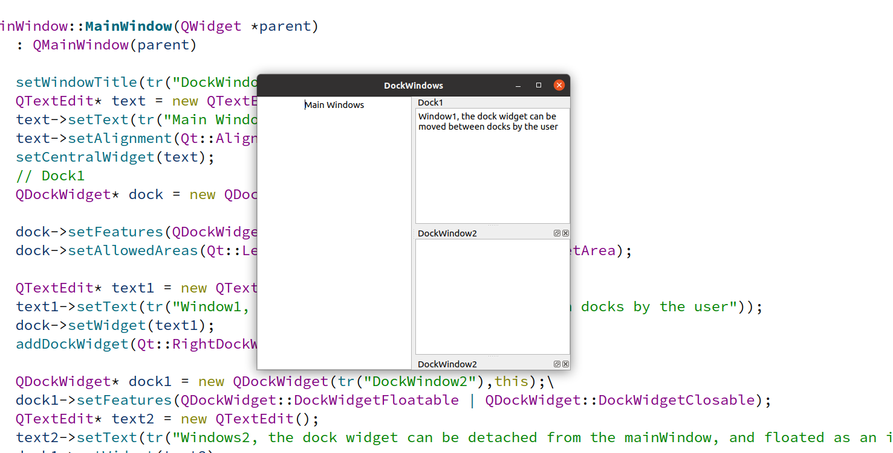
看起来不错！
QStackedWidget类
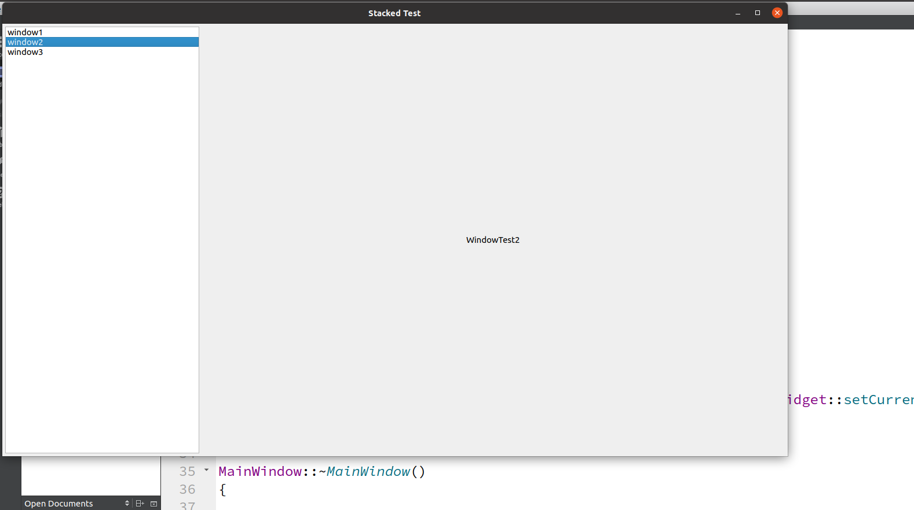
// mainWindow.h
#ifndef MAINWINDOW_H
#define MAINWINDOW_H
#include <QMainWindow>
#include <QListWidget>
#include <QLabel>
#include <QStackedWidget>
#include <QHBoxLayout>
class MainWindow : public QMainWindow
{
Q_OBJECT
public:
MainWindow(QWidget *parent = 0);
~MainWindow();
private:
QListWidget* list;
QStackedWidget* stack;
QList<QLabel*> labelList;
};
#endif // MAINWINDOW_H
#include "mainwindow.h"
MainWindow::MainWindow(QWidget *parent)
: QMainWindow(parent)
{
QWidget* widget = new QWidget(this);
setCentralWidget(widget);
this->setWindowTitle("Stacked Test");
list = new QListWidget(widget);
list->insertItem(0, tr("window1"));
list->insertItem(1, tr("window2"));
list->insertItem(2, tr("window3"));
labelList.push_back(new QLabel(tr("WindowTest1")));
labelList.push_back(new QLabel(tr("WindowTest2")));
labelList.push_back(new QLabel(tr("WindowTest3")));
stack = new QStackedWidget(widget);
for(int i = 0; i < 3; i++)
stack->addWidget(labelList[i]);
QHBoxLayout *mainLay = new QHBoxLayout(widget);
mainLay->setMargin(5); // 设置边距
mainLay->setSpacing(5);
mainLay->addWidget(list);
mainLay->addWidget(stack,0,Qt::AlignCenter);
mainLay->setStretchFactor(list, 1);
mainLay->setStretchFactor(stack, 3);
connect(list, &QListWidget::currentRowChanged, stack, &QStackedWidget::setCurrentIndex);
}
MainWindow::~MainWindow()
{
}Qt基本布局
简单的讲，我们的QT布局如下：
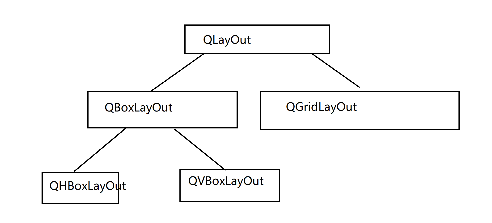
好了，常见的基本控件和其他的定西都说完了